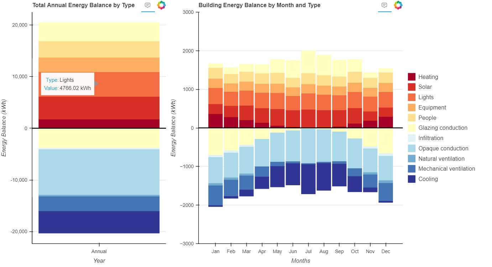

Bar chart code
Building’s Energy Balance
Visualization of Annual and Monthly Energy Balance of a Building
This module provides functionality to visualize the energy balance of a building over a year using stacked bar charts. The data is loaded from an Excel file, processed, and then visualized using Bokeh.
- Functions:
load_excel_data(file_path: str, sheet_name: str) -> pd.DataFrame: Loads data from an Excel sheet into a DataFrame.
calculate_annual_sums(df_gains: pd.DataFrame, df_losses: pd.DataFrame) -> tuple: Calculates the annual sums of gains and losses from the data.
prepare_data_for_visualization(df_gains: pd.DataFrame, df_losses: pd.DataFrame) -> tuple: Prepares data for total annual and monthly balance visualization.
create_figure(title: str, x_range, y_range, x_label: str, y_label: str) -> figure: Creates a Bokeh figure for plotting.
plot_stacked_bars(p: figure, types: list, source_data: dict, reverse_palette: list, losses: bool = False) -> None: Plots stacked bars for the given figure.
configure_figure(p: figure, title: str, x_label: str, y_label: str) -> None: Configures the appearance of the Bokeh figure.
visualize_energy_balance(df_gains: pd.DataFrame, df_losses: pd.DataFrame) -> None: Visualizes the energy balance using Bokeh.
- Visualization_1.Bar_chart.calculate_annual_sums(df_gains: DataFrame, df_losses: DataFrame) tuple[source]
Calculates the annual sums of gains and losses from the data.
- Parameters:
df_gains (pd.DataFrame) – DataFrame containing energy gains data.
df_losses (pd.DataFrame) – DataFrame containing energy losses data.
- Returns:
Annual gains and losses as lists.
- Return type:
tuple
- Visualization_1.Bar_chart.configure_figure(p: figure, title: str, x_label: str, y_label: str) None[source]
Configures the appearance of the Bokeh figure.
- Parameters:
p (figure) – The Bokeh figure to configure.
title (str) – The title of the figure.
x_label (str) – The label for the x-axis.
y_label (str) – The label for the y-axis.
- Visualization_1.Bar_chart.create_figure(title: str, x_range, y_range, x_label: str, y_label: str) figure[source]
Creates a Bokeh figure for plotting.
- Parameters:
title (str) – The title of the figure.
x_range (list or str) – The range of the x-axis.
y_range (tuple) – The range of the y-axis.
x_label (str) – The label for the x-axis.
y_label (str) – The label for the y-axis.
- Returns:
The created Bokeh figure.
- Return type:
figure
- Visualization_1.Bar_chart.load_excel_data(file_path: str, sheet_name: str) DataFrame[source]
Loads data from an Excel sheet into a DataFrame.
- Parameters:
file_path (str) – The path to the Excel file.
sheet_name (str) – The sheet name to load data from.
- Returns:
The loaded data.
- Return type:
pd.DataFrame
- Visualization_1.Bar_chart.plot_stacked_bars(p: figure, types: list, source_data: dict, reverse_palette: list, losses: bool = False) None[source]
Plots stacked bars for the given figure.
- Parameters:
p (figure) – The Bokeh figure to plot on.
types (list) – The list of energy types.
source_data (dict) – The data source for the plot.
reverse_palette (list) – The color palette to use.
losses (bool) – If True, plots losses; otherwise, plots gains. Defaults to False.
- Visualization_1.Bar_chart.prepare_data_for_visualization(df_gains: DataFrame, df_losses: DataFrame) tuple[source]
Prepares data for total annual and monthly balance visualization.
- Parameters:
df_gains (pd.DataFrame) – DataFrame containing energy gains data.
df_losses (pd.DataFrame) – DataFrame containing energy losses data.
- Returns:
Two dictionaries containing data for the total annual and monthly balance graphs.
- Return type:
tuple